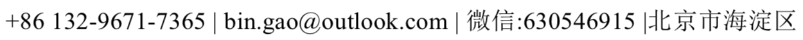

|
高彬

深度学习算法工程师
北京佳格天地科技有限公司
目前就职于 北京佳格天地科技有限公司，职位算法工程师.
毕业于 法国巴黎高科ENSAM 指导老师 B.RENE教授.
[Github] [LinkedIn] [博客]
教育背景
巴黎高科ENSAM 巴黎，法国
巴黎高科ENSAM（法国top10）
巴黎，法国
专业：信息系统工程
09/2015 – 09/2017
米兰理工大学（交换生）
米兰，意大利
专业：电子工程
11/2016 – 12/2016
华侨大学（优秀毕业生）
厦门，中国
专业：机械电子工程及自动化
09/2011 – 07/2015
荣誉/奖励：连续四年获得校一等奖学金、三好学生、2015 届优秀毕业生
工作经历
北京佳格天地科技有限公司
北京，中国
职位:深度学习图像算法工程师
10/2017-至今
遥感影像语义分割：根据一定时期内的遥感影像分割出房屋建筑面积，为政府部门提供新增建筑的地区， 从而使其能够对比出违章用地。
1. 对遥感图像中的颜色不均匀区域用 Histogram matching 方法进行预处理解决影像拼接导致的颜色差异性的问题;
2. 基于 Unet、HED 等网络对网络进行多尺度连接、增加卷积深度使其获得 1x1xn 的全局特征后进行融合等方面的改进，在下采样层实验了 Resnet 和 Senet 的结构，并增加多分支求 loss，从而增加其对场景的适应 性，完成对遥感图片中的房屋、道路等地物进行识别分割;
3. 在 Inference 阶段采用全图预测策略，即预测的结果每次只取中间的部分然后拼接，这样能够解决分割边缘毛刺的问题;
4. 采用非对称卷积改进网络结构，从而加快检测的速度
AI 测量动物体长(已申请专利)：为保险业提供 AI 测量动物体长的算法，从而更加快捷的完成保险理赔。
1. 采用深度学习语义分割以及显著性目标检测的方法完成对猪和参照物的提取分割，语义分割网络改进: 采用了跨层多尺度连接的方式，使其能够综合各层的信息;
2. 上采样采用线性插值，因为卷积很容易对数据敏感，缺乏鲁棒性，测试的是不同尺度、不同拍摄地的数 据，所以我们需要在 inference 阶段降低其对数据的敏感;
3. 采用非对称卷积、和 1x1 卷积核降维等的方式完成对分割模型的压缩用于在移动端的部署;
4. 基于随机森林完成对拍摄角度以及相机自身变形等带来的误差进行相应的矫正。产品已和保险公司签约合作落地，实际使用中误差为 7%
研究经历
比赛经历
CCF 卫星图像识别检测比赛
07/2018-至今
排名:14
采用基于 FPN 的 Faster-Rcnn 网络，固定正负 anchor 的数量，并采用聚类的方式获得 anchor 的尺寸聚类结果， 根据聚类结果进行 anchor 的调整
DataCastle 交通卡口车辆识别检测比赛
07/2018-08/2018
排名:11/750
采用基于 FPN 的 Faster-Rcnn 网络，固定正负 anchor 的数量，这样会极大的减少漏检的比例，recall 可以提升 2%，并与 Retinanet 进行多模型融合后多尺度、水平翻转后进行预测，最后采用 nms 处理结果，这样做之后会有较大的提升
Kaggle 120 种宠物狗分类比赛
12/2017-01/2018
排名:11/1285
采用 Inception V3、Densenet 等多模型融合的方法对特征进行提取，对于得到的特征进行特征拼接融合并训练一 个两层的全联接网络用于最终分类
京东金融 JDD 猪脸识别大赛
11/2017-12/2017
排名:29/1386
1. 采用 Faster Rcnn 检测出猪所在的矩形框并裁减出来，根据裁减后的图像进行显著性目标检测完成对背景的抠 除，完成对图像的预处理以及相应的数据增强等;
2. 利用 Inception V3、Densenet 等多模型融合的方法对特征进行提取，对于得到的特征进行特征拼接融合并训练 一个两层的全联接网络用于最终分类
技能/兴趣
语言：法语 C1; 英语托业 975/990
专业技能：Python, Tensorflow, Keras, PowerPoint, Excel, Word, CAD, CATIA, ABAQUS等
了解 opencv 图像处理库;熟悉常用的分割、识别、检测网络，熟悉 Inception /Densenet /Resnet /Faster Rcnn /SSD / FPN / YOLO /Unet /Hed 等深度学习模型;熟悉 Tensorflow 框架，能在其下实现 paper 的复现;在图像的分类、语义分割和目标检测方面有实际经验; 有良好的阅读英文文献的习惯
|